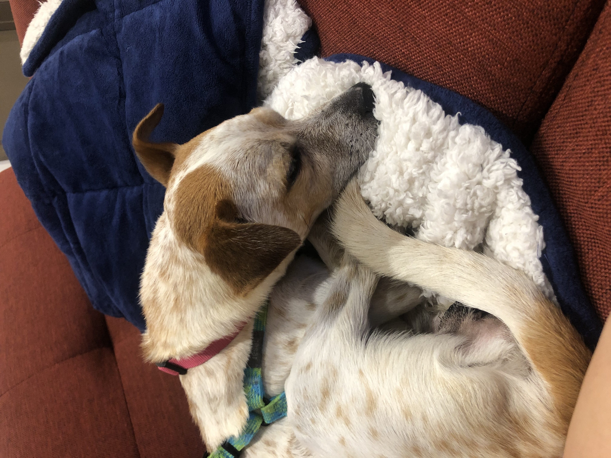
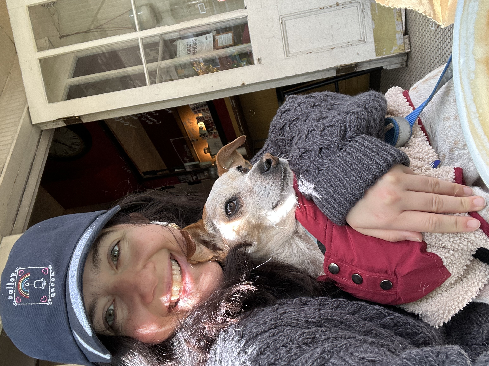
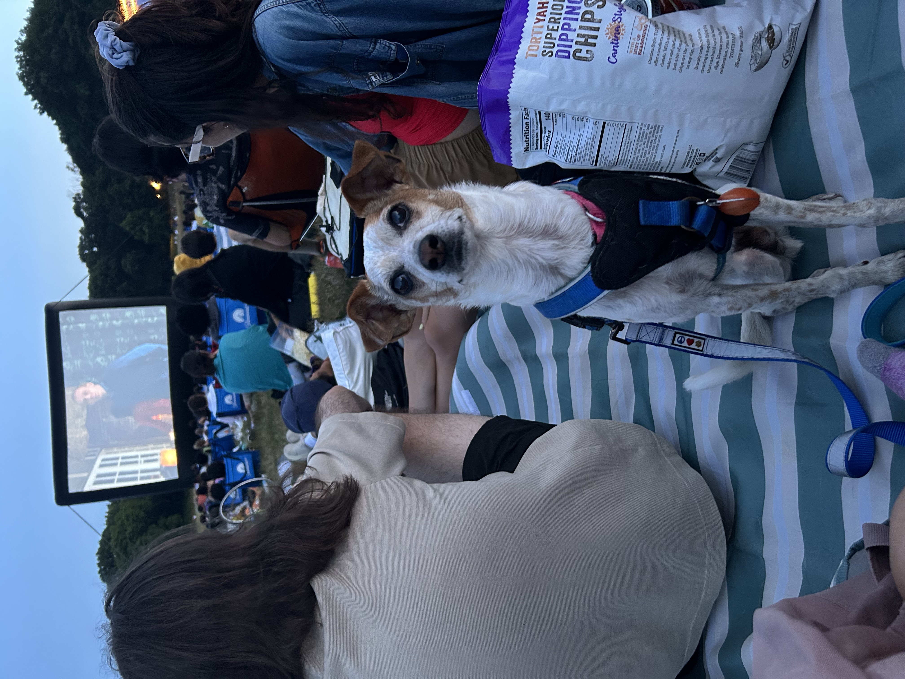
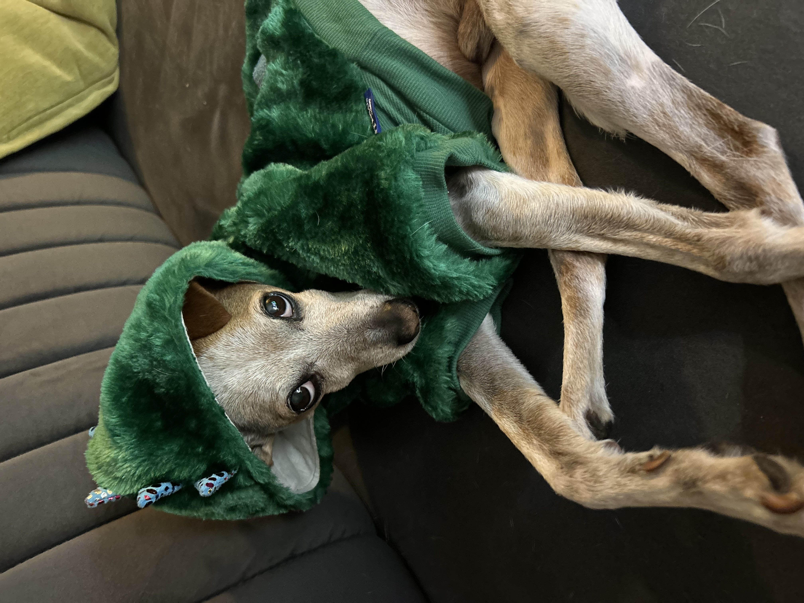

1/5

My first night in my adoptive home!
2/5

Coffee date and people watching- our favorite!
3/5

My mom takes me everywhere!
4/5

My first movie in the park. Do you recognize this film? Answer: School of Rock
5/5

Looking forward to Halloween!